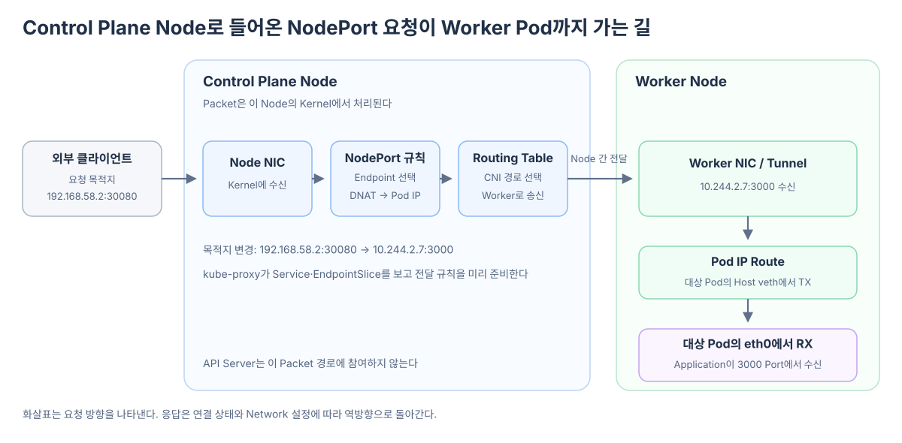

클라이언트가 Control Plane Node의 Node IP:NodePort로 요청했다고 하자. 이때 “마스터가 요청을 받는다”는 말은 Control Plane Node라는 컴퓨터가 Packet을 받는다는 뜻이다. 그 안에서 실행되는 API Server가 애플리케이션 요청을 받아 Worker Node로 다시 요청하는 것은 아니다.
Control Plane Node도 Linux Node이므로 Network Interface, Kernel Network Stack, Routing Table과 CNI가 준비한 경로를 가진다. NodePort 요청은 이 Data Plane을 따라 Worker Node의 Pod까지 이동한다.

요청은 API Server가 아니라 Node의 Kernel로 들어온다
다음 주소로 요청했다고 가정하자.
Control Plane Node IP: 192.168.58.2
NodePort: 30080
선택될 Endpoint
Worker Node의 Pod IP: 10.244.2.7
Application Port: 3000
클라이언트가 만든 최초 Packet의 목적지는 192.168.58.2:30080이다. 이 Packet은 Control Plane Node의 Network Interface를 거쳐 Linux Kernel의 Network Stack으로 들어온다.
클라이언트
→ Control Plane Node의 Network Interface
→ Control Plane Node의 Linux Kernel
API Server는 Kubernetes API 요청을 받는 별도의 Process다. 클라이언트가 API Server Port가 아니라 30080이라는 NodePort로 보냈으므로, 이 Packet은 API Server의 애플리케이션 처리 경로로 들어가지 않는다.
kube-proxy는 Packet이 오기 전에 Service 규칙을 준비한다
kube-proxy 또는 이를 대체하는 구현은 API Server에서 Service와 EndpointSlice의 변화를 관찰한다. 그리고 각 Node의 Kernel에 NodePort와 Endpoint를 연결하는 전달 상태를 미리 구성한다.
Service와 EndpointSlice 변경
→ 각 Node의 kube-proxy가 관찰
→ NodePort 30080과 Endpoint 목록을 로컬 전달 상태에 반영
예를 들어 Node의 전달 상태에는 다음 관계가 표현될 수 있다.
NodePort 30080
├─ Endpoint 10.244.1.5:3000
└─ Endpoint 10.244.2.7:3000
따라서 실제 Packet이 도착했을 때 Control Plane Node가 API Server에 Endpoint를 다시 묻는 것이 아니다. Kernel에 이미 구성된 규칙이 사용할 Endpoint를 선택한다.
Service 규칙이 목적지를 Worker Pod IP로 바꾼다
외부에서 들어온 Packet이 NodePort 규칙과 일치하면 사용 가능한 Endpoint 하나가 선택된다. 여기서는 Worker Node에 있는 10.244.2.7:3000이 선택됐다고 하자.
변경 전
목적지 192.168.58.2:30080
↓ Endpoint 선택과 DNAT
변경 후
목적지 10.244.2.7:3000
DNAT는 Destination Network Address Translation, 즉 목적지 주소 변환이다. 이 단계가 끝나면 Packet의 목적지는 더 이상 Control Plane Node의 NodePort가 아니라 실제 Endpoint Pod의 IP와 Port다.
Service Data Plane의 책임은 여기까지를 중심으로 한다. 어떤 Endpoint를 선택하고 목적지를 어느 Pod IP로 바꿀지 결정한다.
Routing Table과 CNI 경로가 Worker Node까지 전달한다
목적지가 10.244.2.7로 바뀌면 Control Plane Node의 Kernel은 변경된 주소를 기준으로 Route를 판단한다.
목적지 10.244.2.7
→ Routing Table 조회
→ Worker Node 방향의 Interface·Next Hop·Tunnel 선택
CNI 기반 Network 구현은 Pod IP 대역이 어느 Node에 있는지 도달 가능한 Route, Overlay Tunnel 또는 다른 Datapath로 준비해 둔다. 이 경로에 따라 Packet이 Control Plane Node에서 Worker Node로 이동한다.
Control Plane Node
→ CNI가 준비한 Node 간 경로
→ 물리 Network 또는 Overlay Tunnel
→ Worker Node
여기서 kube-proxy가 “Worker Node 이름”을 골라 직접 Packet을 보내는 것은 아니다. kube-proxy가 준비한 Service 규칙은 Endpoint의 Pod IP를 선택하고, 그 IP까지 가는 실제 다음 경로는 Routing Table과 CNI Datapath가 결정한다.
Worker Node는 Packet을 대상 Pod의 eth0으로 내려보낸다
Worker Node가 Packet을 받으면 목적지 10.244.2.7이 자신의 Node에 있는 Pod IP라는 것을 알고 해당 Pod 쪽 경로를 선택한다. 일반적인 veth 기반 구성에서는 다음처럼 이어진다.
Worker Node의 Network Interface 또는 Tunnel
→ Worker Node의 Network Stack과 Route
→ 대상 Pod 쪽 Host veth에서 TX
→ veth pair
→ Pod의 eth0에서 RX
→ 3000 Port를 연 Application
Pod 입장에서는 자신의 eth0으로 들어온 Packet의 목적지가 자신의 IP와 Application Port이므로 일반적인 TCP 또는 UDP 수신 처리를 수행한다.
응답은 기존 연결 상태를 이용해 클라이언트로 돌아간다
대상 Pod가 응답하면 Packet은 Worker Node와 진입 Node의 Network 경로를 따라 클라이언트 쪽으로 돌아간다. Linux의 Connection Tracking은 앞에서 적용된 NAT 상태를 기억하므로, 클라이언트는 자신이 접속했던 Node IP와 NodePort의 응답으로 인식할 수 있다.
구체적인 반환 경로와 Source NAT 적용 여부는 CNI 구성과 externalTrafficPolicy 같은 Service 설정에 따라 달라질 수 있다. 하지만 요청 경로의 핵심 책임은 다음처럼 나뉜다.
Service 규칙
→ 실제 Endpoint Pod IP 선택
→ NodePort 목적지를 Pod IP와 Port로 변경
Routing Table과 CNI
→ 선택된 Pod IP가 있는 Worker Node까지 전달
Worker Node의 Pod Network
→ Host veth와 Pod eth0을 거쳐 Application에 전달
따라서 “Control Plane Node가 Worker Node로 넘긴다”는 결과는 맞다. 정확히는 API Server가 애플리케이션 요청을 다시 보내는 것이 아니라, Control Plane Node의 Kernel이 Service 규칙으로 목적지를 바꾸고 Routing Table과 CNI가 Worker Node까지 Packet을 전달한다.